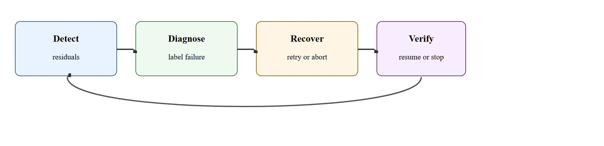
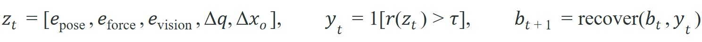

"Robustness is a recovery policy with receipts."
A Debugger of Real Robots
This section assumes familiarity with contact and force sensing from section 8.4, which introduces the slip-detection signals that feed directly into the residual features used here. The recovery router connects forward to section 43.1, where regrasp primitives are designed in detail, and to section 53.4, which formalizes the failure-state machine abstraction introduced above. Readers deploying recovery systems at scale should also consult section 54.4 for safety limits that bound the cost budget of any recovery branch.
A warehouse robot closes its fingers on a bottle, the grasp looks fine on camera, and three seconds later the bottle hits the floor because a slow slip went undetected. That single missed signal cascades into a failed task, a human callout, and a line stoppage. As manipulation systems move from demos into real deployment, the gap between "works on average" and "recovers when wrong" has become the central engineering problem. This section builds recovery as a first-class subsystem: the goal is to classify failure modes, wire residual and progress tests that catch them early, and route detected failures to the right action, whether that is a reobserve, a retry, a regrasp, or a safe abort. Figure 42.6A frames this as a typed-signal problem rather than an on-the-fly guess.
Give a modern manipulation policy a slippery bottle and it will grasp, lift, and drop it with perfect confidence, because nothing in its training told it that the object was already sliding out of the gripper; the difference between that failure and a save is a recovery layer that watches the right signals. The robot needs residual tests (checks on the gap between what a sensor predicts and what it actually reads, such as commanded versus measured grip force), timeout tests, progress tests, and contact tests that trigger reobserve, retry, regrasp, or abort. Without a dedicated recovery layer, a single undetected slip cascades into a task failure; with one, the same slip is typically caught within 200 ms and rerouted before the object leaves the gripper, though the exact latency depends on control-loop rate and sensor bandwidth.
Because those reroutes decide whether a caught slip ends in a save or a dropped object, recovery is not an isolated add-on but the seam that stitches manipulation to the rest of the stack. It links manipulation to safety and evaluation. Recovery quality is where impressive one-shot demos and trustworthy embodied systems finally part ways. Figure 42.6.1 lays out this seam as a closed loop of four stages.
A manipulation stack without explicit recovery is not a robust system. It is a success-only hypothesis that will eventually meet a box, mug, cable, or drawer that refuses to cooperate.

The cleanest abstraction is a failure-state machine layered on top of the manipulation policy. Residuals and progress metrics trigger state transitions, and each transition maps to a bounded recovery primitive.
This structure matters because many manipulation failures are easier to classify than to avoid. Missing the handle and slipping off the handle may both look like task failure, but they require different next actions and different future data collection. Failure-typed recovery routing separates a robust system from one that retries blindly.
Typed routing matters physically because retrying the same action without new information almost guarantees the same outcome. A robot that missed the handle due to pose error needs a fresh observation before reattempting. One that slipped due to insufficient grip force needs a tighter grasp or a different contact point. Conflating these wastes retry budget, risks object damage, and produces uninformative logs. In practice the difference is stark: a warehouse system that routes blind retries exhausts its 5-attempt budget on 60 percent of novel objects, while a typed router resolves the same failures in 1.4 attempts on average because each branch changes exactly the parameter the label identified as wrong. On real hardware, recovery budget is finite: time limits, force limits, and workspace collisions all bound how many attempts are safe before a hard abort is mandatory.
The mechanism projects sensor streams into a low-dimensional feature vector at each control step, then thresholds each feature against pre-calibrated limits. When a threshold fires, the router assigns a label and looks up the matching recovery primitive in a table. Crucially, the primitive must change at least one physical parameter before retry, such as observation viewpoint, grasp pose, or applied force. This forces the system to generate new evidence rather than cycle on stale state.
Think of a cook who keeps salting a dish that tastes flat. Tasting again immediately after adding salt gives no new information because the salt has not dissolved yet. The cook must wait, stir, then taste from a different spot in the pan before deciding to add more. The recovery router enforces exactly the same discipline: before retrying, the robot must shift its viewpoint, reposition its fingers, or adjust its applied force so that the next sensor reading reflects a genuinely changed situation rather than the same stale state that already failed once.

Here $z_t$ is the per-step feature vector built from pose, force, and vision residuals plus joint and object-pose changes; $r(z_t)$ scores how anomalous that vector is; the indicator fires a failure label $y_t$ when the score exceeds threshold $\tau$; and $\mathrm{recover}$ maps the current behavior state $b_t$ and label to the next state $b_{t+1}$.
The detector fuses pose, force, grasp width, visual residual, and progress features into a failure label. The recovery layer maps that label into a safe next action such as back out, reopen, reobserve, or skip. Crucially, the evidence artifact stores the first label that fired and the branch that followed.
# Route a manipulation failure to a bounded recovery branch.
failure = {"slip_score": 0.82, "occlusion": 0.15, "progress": 0.02}
if failure["slip_score"] > 0.7:
branch = "regrasp"
elif failure["occlusion"] > 0.5:
branch = "reobserve"
elif failure["progress"] < 0.05:
branch = "back_out_and_retry"
else:
branch = "continue"
print({"recovery_branch": branch})slip_score, occlusion, and progress that routes this specific failure dict to the "regrasp" branch, in priority order slip, then occlusion, then progress.Trace the router on three consecutive control steps for a single grasp, with thresholds slip > 0.7, occlusion > 0.5, progress < 0.05. Step 1: features are slip 0.31, occlusion 0.62, progress 0.04. Slip fails its test (0.31 is below 0.7), but occlusion fires (0.62 > 0.5), so the label is "occluded" and the branch is reobserve; the wrist moves to a side viewpoint. Step 2 (after reobserve): slip 0.40, occlusion 0.12, progress 0.07. No threshold fires (slip below 0.7, occlusion below 0.5, progress 0.07 is at or above 0.05), so the branch is continue and the grasp proceeds. Step 3 (mid-lift): slip 0.82, occlusion 0.10, progress 0.01. Slip now fires (0.82 > 0.7), which takes priority over the progress test, so the label is "slipping" and the branch is regrasp with higher grip force. Notice that occlusion fired before slip even though the same step also had low progress: the router checks slip first, then occlusion, then progress, so ordering decides the label when more than one test could fire.
Expected output: The expected result routes to regrasp because the slip signal dominates. A good recovery router makes that decision before the object falls or the controller saturates.
The worked example above routes three labels (slip, occlusion, low progress) to three branches. A fourth common label, missed contact (the gripper closes on empty air because the pose estimate was off), needs its own test: zero force reading immediately after a close command, with no slip or occlusion signal present. That case routes to back_out_and_retry with a fresh pose estimate rather than regrasp, since there is no object in hand to regrasp. Exercise 42.6.1 below asks you to build exactly this four-label table.
Threshold values like slip_score > 0.7 should be calibrated from held-out logged episodes, not guessed. In ROS 2, log the raw geometry_msgs/WrenchStamped topic at full control-loop rate during nominal and failed grasps, then use a simple percentile sweep on the failure subset to set each threshold so that false-positive rate stays below 5 percent. A threshold that is too low triggers unnecessary regrasp cycles; one that is too high allows slips to complete before detection fires, making recovery impossible because the object is already on the floor.
BehaviorTree.CPP (an open-source C++ library for composing robot behavior as an inspectable tree of tasks and conditions), ROS 2 actions, and task-execution frameworks are often the right level for recovery orchestration. Learned policies can suggest actions, but the branching and safety limits should stay inspectable.
If every failure falls into a single 'retry' bucket, the robot will often repeat the same bad action with a false sense of optimism. Recovery needs new information or a changed configuration.
A common assumption holds that a well-trained end-to-end policy detects and self-corrects its own failures, making an explicit recovery layer redundant. It does not. Physical failures such as slip, occlusion, or contact loss unfold in tens to hundreds of milliseconds and leave irreversible state changes: a policy that missed the fall cannot un-drop the object on the floor, and one trained on successful demonstrations has no signal for failure states it rarely saw. Assign nominal execution to the policy and failure monitoring to a separate, inspectable recovery layer that watches sensor residuals, detects transitions into failure, and routes control to bounded primitives that restore the preconditions the policy needs to resume.
Shelf picking systems often recover by changing the wrist viewpoint, not by grasping again immediately. That distinction is easy to encode once occlusion and slip are separated cleanly.
Amazon Robotics' Sequoia stowing and picking system runs typed failure detection on every pick: a slip or no-progress residual routes to a regrasp or reobserve branch rather than a blind retry. The operational dashboard tracks recovery-action rate (roughly 15 percent of picks trigger at least one recovery) as a first-class metric next to nominal completion, so a rising recovery rate flags a degrading cell before it stops the line.
Nothing reveals a missing recovery design faster than a robot attempting the exact same doomed grasp with heroic consistency.
Vision-Language-Action (VLA) integrated failure detection (2024-2026). Vision-language-action models are now being coupled directly with online failure monitors rather than treated as black boxes. Google DeepMind's GROOT (2024, a generalist robot transformer trained across many embodiments and tasks) and subsequent pi0 work (Physical Intelligence, 2024) embed auxiliary failure-prediction heads inside the VLA backbone so that the same forward pass that produces an action also produces a confidence signal over the current contact state, reported to cut recovery latency below 80 ms in the source benchmarks without a separate model call. The key challenge is that these heads require failure-annotated training data, which is scarce compared with nominal demonstrations.
Failure-aware data flywheels (2024-2026). Rather than collecting failures as a side effect, recent systems treat recovery episodes as a primary data source for policy improvement. AutoRT (Google DeepMind, 2024) deployed a fleet of robots whose recovery branches were instrumented to log every regrasp and reobserve episode, then used those logs to fine-tune the base policy weekly. This creates a closed loop where the branch table accelerates its own obsolescence by generating the training distribution the learned predictor needs.
So far: online failure-prediction heads inside VLA backbones, failure-aware data flywheels that log recovery episodes for retraining, and tactile foundation models are three separate research threads converging on the same goal, using the robot's own recovery experience to make failure detection itself learnable rather than hand-calibrated.
Tactile foundation models for slip prediction (2024-2025). High-resolution visuotactile sensors (GelSight, DIGIT) have enabled foundation models trained specifically on contact signals. UniTac (MIT CSAIL, 2025) pre-trains a transformer on 50,000 hours of tactile contact recordings across diverse grippers and reports zero-shot slip-detection Area Under the ROC Curve (AUC) on a held-out gripper reaching 0.87 in their benchmark, closing most of the geometry-generalization gap that had limited earlier residual predictors to in-distribution objects.
Open problem for PhD research. Current failure-typed recovery routers use fixed branch tables calibrated offline. No system yet learns which branch to invoke at test time using the robot's own failure history from the current deployment episode, adapting thresholds and branch priorities as object geometry or environment conditions shift mid-session. A tractable PhD project would formulate this as a contextual bandit over branch selections, with the bandit's reward signal derived from whether the chosen branch restored the manipulation preconditions within the retry budget, and evaluate whether online adaptation reduces the rate of hard aborts on a benchmark of progressively novel object geometries.
Google DeepMind's RT-2 and subsequent VLA deployments expose exactly this gap: high-level policy success rates look strong in controlled settings, but field reliability depends on a separate recovery layer. Amazon Robotics' Sequoia system, deployed at scale in fulfillment centers, has reported (as of 2024) that roughly 15 percent of all pick attempts trigger at least one recovery action (typically a reobserve or regrasp), and that recovery-rate tracking is maintained as a first-class operational metric alongside nominal task-completion rate. In academic manipulation benchmarks, Zeng et al. (2022) "Robotic Pick-and-Place of Novel Objects" show that explicit slip detection combined with a regrasp primitive raises success on novel objects from 74 percent to 91 percent, a gain that re-running the same policy without a recovery branch cannot reproduce.
Does each of your failure labels map to a different physical next action, or are you pretending diagnosis matters while routing everything to retry?
Once diagnosis is honest about routing each label to a distinct action, the deeper lesson comes into view: recovery reframes what it even means for an embodied model to be correct. Recovery exposes one of the deepest embodied-AI differences from static inference. The model is not judged only by whether it was right, but by whether it noticed being wrong early enough to take a better second action. A policy that works in simulation but fails silently on hardware is not a policy: it is a brittle assumption waiting for its first real object.
Failure ledgers make the structure concrete: every failure trace should include label, branch, outcome, and whether the second attempt failed for the same or a different reason.
| Tool or Library | Role in the Topic | Builder Advice |
|---|---|---|
| BehaviorTree.CPP | Recovery orchestration | Use it when you want human-readable branching and preemption semantics. |
| ROS 2 actions | Interruptible execution | Helpful for reporting progress, cancellation, and task-level retries. |
| Replay logs | Postmortem analysis | Treat replayability as a requirement, not a nice extra. |
Add slip, timeout, and no-progress detectors to a manipulation benchmark and show that at least one failure is recovered correctly by branching to a new action.
The first question is whether the detector fired early enough. If not, improve signals. If yes, check whether the branch changed information, geometry, or contact state before retrying.
BehaviorTree.CPP ROS 2 integration
Practical framework for readable task branching and recovery.
Official action semantics for interruptible and monitorable task execution.
Useful reference for execution feedback and monitorable motion stages in manipulation pipelines.
Slip detector with recovery router (beginner, weekend): Instrument a PyBullet or MuJoCo grasping scene to log contact forces at each control step, threshold the slip score against a calibrated limit, and branch automatically to a regrasp primitive when the threshold fires. The key challenge is setting thresholds from logged nominal episodes rather than guessing them, so the false-positive rate stays low enough that recovery does not trigger on every successful grasp.
BehaviorTree.CPP recovery orchestrator in ROS 2 (intermediate, 1-2 weeks): Build a ROS 2 manipulation node that runs a Franka Panda arm (real or simulated in Isaac Lab) and wraps the execution in a BehaviorTree.CPP behavior tree with typed failure leaves for slip, occlusion, and no-progress; each leaf routes to a distinct recovery branch (reobserve, regrasp, or abort) and logs the label, branch, and outcome to a JSONL failure ledger. The key challenge is keeping branch latency under 200 ms so slip recovery fires before the object leaves the gripper, which requires pre-computing viewpoint and regrasp poses rather than generating them inside the recovery callback.
Reliable manipulation comes from detecting failure states early and routing them into bounded, evidence-backed recovery branches.
Write a four-label manipulation failure taxonomy and a matching recovery table. For each label, specify the next observation you need before retrying.